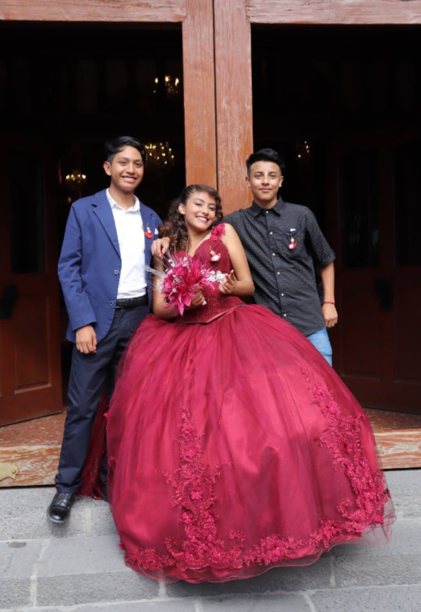
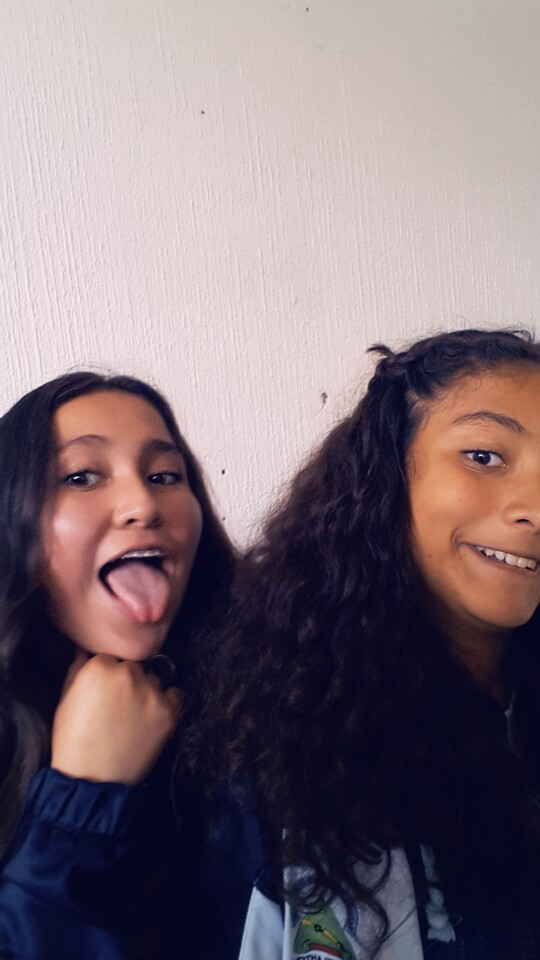

El es Diego, nos conocimos en la Voca 3 vamos en el mismo salón y fue muy chistosa la manera en la que nos empezamos a hablar es la persona más cercana a mi, ahora somos más que amigos pero sigue siendo mi amigo, porque me escucha me da consejos, en fin esta para mi siempre que lo necesito y hace el ridículo conmigo
Ella es Mariana la conozco desde la primaria pero no nos caiamos bien si no hasta la secundaria fue cuando hablamos más y nos dimos cuenta que podriamos ser amigas y asi fué, vive cerca de mi casa y luego salimos a comer y a platicar de cosas que nos pasan en nuestras nuevas escuelas
El es Raul es mi mejor amigo y lo considero como mi hermanito, a el lo conozco desde que ibamos en el kinder pasamos a la primaria y seguiamos en el mismo salón pero en la secundaria fuimos a distintas, ahora en la prepa vamos a la Voca 3 los dos y en las mañana nos vamos juntos
Ella es Ximenaa ella ya la ubicaba porque fuimos al mismo curso de verano y pues no nos hablamos pero nos toco en el mismo salón de clases en la secundaria y ahi fue donde nos hicimos amigas durante los 3 años y hasta el momento
Ella es Isabel A ella la conocí en la secundaria pero fue muy chistoso porque se cayó en educación física y asi es como le hable y de ahí deciamos y haciamos puras tonterias en horas libres o con maestros
Ella es Gabbi no se porque pero siempre soy muy habladora y ella estaba afuera de mi privada y la ubicaba por facebook y le dije "¿Erres la famosisima Gabbi?" ella se rio y a partir de ahi nos juntabamos más junto con Mariana

Ivan A el le hable en la secundaria y me acuerdo que el me aconsejaba y me contaba sus aventuras y yo igual y como vivíamos muy cerca nos llevabamos super bien, hasta saliamos a comer paletas

Ella es Miriam Yo le caia mal el primer año de secundaria pero después fuimos hablando y nos dimos cuenta que estamos igual de tontas y nos llevamos bien
Les podía contar cada una de las historias de como conoci a todos mis amigos en la secundaria pero el chiste es que nos fuimos juntando e hicimos un grupo de 14 amigos cada uno con distinta personalidad pero complementandonos y complementandome, gracias a cada uno de ellos fuí y soy muy felíz